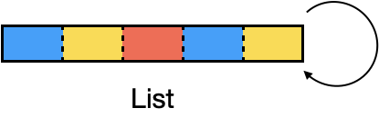

Variables, Data Types and Structures#
We will first explore the concept of variables that are used to label and store values (and other things) in a program.
Using the recipe below as an analogy, n label for a variable that stores a value (e.g. the number of IWC scoops). This variable can be referenced in other parts/steps of the recipe that we will explore later

Each variable can contain specific data types and they can be organized into different data structures
Data types describe the data (e.g. numbers or characters)
Data structures organize data (e.g. lists)
Variables#
Variables are used to store
data(as well as objects and functions)We use the
assignment operatorto link a variable to a data/object/function
Assignment operator#
In R, we conventionally use the leftward operator <-
variable
nameon theleftvalueon theright
variable <- 30
variable
When we assign a new value to the same variable, it will override any previous value
variable <- 20
variable
A variable can also be used as part of calculation or function and assigned to itself to update the contents
# Incrementing the value by 1
variable <- variable + 1
variable
Picking variable names#
The variable name needs to follow rules in order for it to be valid
Identifiers can be a combination of letters, digits, period (.) and underscore (_).
It must start with a letter or a period. If it starts with a period, it cannot be followed by a digit.
Reserved words in R cannot be used as identifiers.
Examples of valid names
patientID Patient_ID .patientid patientcat1
Examples of invalid names
patient@ID 1patient _patient NA .1patient
If we use an invalid variable name, R will throw an error
NA <- 10 # reserved word in R
Error in NA <- 10: invalid (do_set) left-hand side to assignment
Traceback:
Listing and deleting variables#
We can list and delete variables using reusable recipes (called functions) that hide away the details of how it is implemented. There are 2 built-in functions
lsfunction to list the current variables.rmfunction for deleting a variable
Each function follows the format of function_name(parameter). The parameter specifies additional information if required
ls() # no parameter needed
Note that we need to put the () brackets after a function. If this is omitted, R will list the contents of the function
ls
function (name, pos = -1L, envir = as.environment(pos), all.names = FALSE,
pattern, sorted = TRUE)
{
if (!missing(name)) {
pos <- tryCatch(name, error = function(e) e)
if (inherits(pos, "error")) {
name <- substitute(name)
if (!is.character(name))
name <- deparse(name)
warning(gettextf("%s converted to character string",
sQuote(name)), domain = NA)
pos <- name
}
}
all.names <- .Internal(ls(envir, all.names, sorted))
if (!missing(pattern)) {
if ((ll <- length(grep("[", pattern, fixed = TRUE))) &&
ll != length(grep("]", pattern, fixed = TRUE))) {
if (pattern == "[") {
pattern <- "\\["
warning("replaced regular expression pattern '[' by '\\\\['")
}
else if (length(grep("[^\\\\]\\[<-", pattern))) {
pattern <- sub("\\[<-", "\\\\\\[<-", pattern)
warning("replaced '[<-' by '\\\\[<-' in regular expression pattern")
}
}
grep(pattern, all.names, value = TRUE)
}
else all.names
}To remove/delete a variable, we use the rm function and specify the name of the variable that we want to delete within the brackets as a parameter
# removing variable from the environment
rm(variable)
If we reference a non-existent variable, R will report an error
variable
Error in eval(expr, envir, enclos): object 'variable' not found
Traceback:
Basic Data Types#
Data can be quantitative or qualitative and in R, we will be using 4 basic data types
How do we specify the data type to be stored in a variable? When we assign values to variables, R infers the data type based on context of the value
numeric: digits (including decimal)integer: digits withLsuffixcharacter: enclosed in quoteslogical:TRUE/FALSE,T/F(capitalized)
# Let's assign some values to variables
age <- 10 # number
name <- "Alice" # string (enclosed in quotes)
asthma <- FALSE # logical
visits <- 2L # number (integer)
# We can examine the contents of the variables
age
name
asthma
visits
Checking and testing the data type of a variable#
We can check the data type by using the built-in class function
# We can check the data type of the variables
class(age)
class(name)
class(asthma)
class(visits)
Note that although we assigned numbers to both age and visits, the data type of the visit variable is an integer
This is because the suffix
Lindicates that the number should be aninteger
We can also test whether a variable is of a certain data type with following functions with the prefix is. These functions return TRUE/FALSE
is.numericis.characteris.logicalis.integer
is.numeric(age)
is.character(name)
is.logical(asthma)
is.integer(visits)
Indicating a variable is empty/null#
Sometimes, we need to indicate that a variable is empty or null. This is useful to indicate missing or not applicable values
To do this, we assign the NA keyword as a value to the variable. This value is treated as a logical data type
# what if you want to indicate that a variable is empty/null?
occupation <- NA # for example, this data
# is not applicable for a child
class(occupation)
We can test if the variable is empty/null using the is.na function
TRUEindicates that the variable is empty/nullFALSEindicates that the variable contains data
This will be useful when checking for missing values in a dataset
is.na(occupation) # checking if a variable is NA
Changing one data type to another#
Sometimes, we need to change one data type to another because operations that use >1 variable need them to be of the same data type
An example of this would be the addition of 2 variables containing numbers. This requires both variables to be of the same data type (numeric or integer)
This diagram shows the different ways that data types can be changed (coerced) into another
a
logicaldata type (TRUE/FALSE) can be changedto a
charactertype “TRUE” or “FALSE”to a
numerictype where TRUE = 1, FALSE = 0
a
numericdata type can be changed to acharactertype e.g. 1 becomes “1”a
characterdata type (containing numbers only) can be changed to anumerictype e.g. “1” becomes 1

From: https://rstudio-education.github.io/hopr/r-objects.html
These conversions can be performed using the following functions with the as prefix
as.numericas.characteras.logicalas.integer
Let us try converting age (numeric) to a character type using the as.character function
age # print age variable (numeric)
age <- as.character(age)
class(age)
age # print age variable (character)
As the age variable contains a number in a character form, we can convert it back into the numeric type using the as.numeric function
age # print age variable (character)
age <- as.numeric(age)
class(age)
age # print age variable (numeric)
When is conversion/coercion useful?
It is useful if we need to perform an operation/calculation that requires the same data type
Let us take an example where we have a variable increment that contains a number as a character type (using enclosed quotes)
increment <- "1"
increment
Now, let us trying adding this increment to the age variable. Both contain numbers but they are different data types
age: numericincrement: character
age + increment
Error in age + increment: non-numeric argument to binary operator
Traceback:
As you can see, R gives an error as it expects both data types to be numeric when we are adding.
To fix this, we coerce the increment variable to the numeric data type before adding it to the age variable
age + as.numeric(increment)
Conversion of numeric/integer data types#
When dealing with numbers, they can be numeric or integer types
numericfor decimal values (e.g. 11.5, 3.14)integerfor whole numbers
An important point to note is that if we coerce a numeric value to aninteger value, the decimal representation is lost and we lose information
As an example, let us create a variable with a numeric data type
glucose <- 12.5
class(glucose)
We coerce the variable to an integer data type using the as.integer function
glucose
glucose <- as.integer(glucose)
class(glucose)
glucose
As we can see, this results in a loss of information as the decimal portion is lost during the coercion
What happens when we try and convert it back to a numeric type?
glucose <- as.numeric(glucose)
class(glucose)
glucose
When we try and convert the integer data type back to numeric, it does not restore the lost information
Summary of variables and basic data types#
Assignment of a variable is done using the
<-operatore.g.
x <- 10
Variables can be listed using
ls()and deleted usingrm()Basic data types for values include
numericfor decimal numbersintegerfor integerscharacterfor stringslogicalfor boolean (TRUE/FALSE) andNA
NAcan be assigned to a variable to indicate missing or not applicable dataFunctions for checking and testing data types
Checking data type:
class()Testing specific data types (returns
TRUE/FALSE)is.numeric()is.integer()is.character()is.logical()
Testing if variable is empty/null:
is.na()
Data types can be converted/coerced to another data type for operations where variables need to be of the same type
a
logicaldata type (TRUE/FALSE) can be changedto a
charactertype “TRUE” or “FALSE”to a
numerictype where TRUE = 1, FALSE = 0
a
numericdata type can be changed to acharactertype e.g. 1 becomes “1”a
characterdata type (containing numbers only) can be changed to anumerictype e.g. “1” becomes 1
Functions for coercion of data types
as.numeric()as.integer()as.character()as.logical()
Example of coercion to numeric type on same variable
xx <- as.numeric(x)
Exercise - Variables/Data Types#
Write code to perform the following steps
Assign an
integer10 to variablexDetermine the the data type of variable
xConvert it to a
character typetest whether the variable
xis acharactertype
# start here
Show code cell content
# solution
x <- 10L
class(x)
x <- as.character(x)
is.character(x)
Data Structures#
From these basic data types, we can use data structures that organize them. We will be covering these 3 types
Vectors: collection of values with the same data typeLists: collection of values with different data typesData Frames: vectors organized as columns (analogous to Excel sheet)
There is another data structure for matrices but we will not covering them
1. Vectors#
A vector is a data structure that is a collection of elements with the same data type, including another vector
It is defined using the function c, which takes elements as its parameters
c( element_1, element_2, element_3, .... )
Example of vectors
Let us define different vectors representing collection of data representing patients
age: numericname: characterasthma: logical TRUE/FALSErisk: character
# vector
vector_age <- c(10,20,30,40)
vector_name <- c("Alice", "Bob", "Charlie", "David")
vector_asthma <- c(F,T,F,F)
vector_risk <- c("low", "med", "high", "high")
# print vectors
vector_age
vector_name
vector_asthma
vector_risk
- 10
- 20
- 30
- 40
- 'Alice'
- 'Bob'
- 'Charlie'
- 'David'
- FALSE
- TRUE
- FALSE
- FALSE
- 'low'
- 'med'
- 'high'
- 'high'
We can use the class function to check the data types contained in each vector
# we can check the data type contained in the vector
class(vector_age)
class(vector_name)
class(vector_asthma)
class(vector_risk)
Adding elements to an existing vector
Besides the basic data types, vectors can also include other vectors of the same data type. This is useful when we want to add elements to an existing vector
# vectors can also include vectors
vector_base <- c(1,2,3,4,5)
vector_base <- c(vector_base,6) # idiom for appending values
vector_base
- 1
- 2
- 3
- 4
- 5
- 6
We can also create an empty vector using the function vector and add elements to it
# adding values to an empty vector
vector_initial <- vector() # empty vector
vector_initial <- c(vector_initial,1) # append 1
vector_initial <- c(vector_initial,2) # append 2
vector_initial <- c(vector_initial,3) # append 3
vector_initial
- 1
- 2
- 3
Finding out the number of elements in a vector
We can find out the length of the vector (i.e number of elements) by using the function length
# we can check the length of each vector
length(vector_age)
length(vector_name)
length(vector_asthma)
length(vector_risk)
Be careful of mixing data types in a vector
Vectors contain data of the same type. However, if we inadvertently include different data types, there may not be any warning of an unintended effect
# what do you think will happen?
vector_mixed <- c(10, "ten", 30, "forty", TRUE, NA)
No error occurred although the elements were of different data types
R coerces the different data types to a
charactertypeAs all elements are of the same
charactertype, they are included in the vector
# print vector
vector_mixed
- '10'
- 'ten'
- '30'
- 'forty'
- 'TRUE'
- NA
# check the data type of the vector
class(vector_mixed)
Factors/levels for categorical data#
For vectors that have the character data type, we may consider converting it into a factor class for categorical data
A
factorclass consists of differentlevels, representing different categories:levels can be used for grouping during analysis
levels can be arranged if the categorical data is ordered (e.g. low < med < high risk)
To do this, we use the factor function
vector_risk <- factor(vector_risk)
vector_risk
- low
- med
- high
- high
Levels:
- 'high'
- 'low'
- 'med'
class(vector_risk)
We can use the levels function to list the levels and nlevels function to show the number of levels (categories)
levels(vector_risk)
nlevels(vector_risk)
- 'high'
- 'low'
- 'med'
Having levels allows levels (categories) to be used as a grouping variable. Using the table, we can tabulate the counts for each level
table(vector_risk)
vector_risk
high low med
2 1 1
Specifying the order of categories
Note that by default, the order of levels is alphabetical. Here, it is ordered as high, low and med.
This may not be what we want and we can explicitly specify the order of levels using the
levelsoption in thefactorfunctionThe
levelsoption takes in avectorof the categories in the order that you want
vector_risk <- factor(vector_risk, levels = c("low", "med", "high"))
vector_risk
- low
- med
- high
- high
Levels:
- 'low'
- 'med'
- 'high'
levels(vector_risk)
nlevels(vector_risk)
- 'low'
- 'med'
- 'high'
The order of levels has changed
table(vector_risk)
vector_risk
low med high
1 1 2
This is also reflected in the count data using the table function
Selecting data in a vector by index#
It can be useful to select the data in a vector and we can do it by referring to the position/index of the element.
The data is selected using square brackets
[]Note that the index starts from 1 in R
Let us start by considering vector_age
vector_age
- 10
- 20
- 30
- 40
To select a single element, we specify the index of the element we want within the square brackets []
vector_age[1] # element at index 1
To select a range of elements, we specify the range as start_index:end_index within the square brackets []
vector_age[1:3] # elements at indexes 1 to 3
- 10
- 20
- 30
To select specific elements, we specify the indexes we want in a vector within the square brackets []
vector_age[c(1,3)] # elements at index 1 and 3
- 10
- 30
We can also exclude elements by prefixing the selection with -
vector_age[-1] # exclude element at index 1
- 20
- 30
- 40
vector_age[-1:-3] # exclude elements from 1 to 3
vector_age[-c(1,3)] # exclude elements 1 and 3
- 20
- 40
Selecting data in a vector by name/label#
Besides using indexes, we can select data from vectors using names if each element has a label
A vector with labeled elements is made by specifying the label for each element
label=value
Let us consider an example of categories for grades
vector_grade <- c(A=">85", B="70-85", C="60-70", D="<60")
vector_grade
- A
- '>85'
- B
- '70-85'
- C
- '60-70'
- D
- '<60'
Note that each element now has a corresponding label
To list the labels for a vector, we can use the names function
# we use the names function to list the names in a vector
names(vector_grade)
- 'A'
- 'B'
- 'C'
- 'D'
To select a specific element, we specify the label (in quotes) within the square brackets []
vector_grade["B"]
To select specific elements, we specify the labels (in quotes) we want in a vector within the square brackets []
vector_grade[c("A","D")]
- A
- '>85'
- D
- '<60'
Summary of vector data structure#
Defined as
c(value1, value2,..)orvector(value1, value2,..)Values in a vector are the same data type
length(vector)gives the number of values in the vectorData can be appended to an empty or existing vector
vector_data <- c(vector_data, value)
A vector with categorical data can be converted to a factor type using
vector <- factor(vector)By default, the categories(levels) are arranged alphabetically
The arrangement of levels are specified as
factor(vector, levels=c("label1,"label2",..)
Data can be selected using an index
vector[index]: single indexvector[start:end]: range indexesvector[-index]: exclude an indexvector[c(index1, index3,..)]: specific indexes
Data can be selected by label if the vector is defined with labels
vector(label1=value1, label2=value2,..)labeled_vector["label"]: single labellabeled_vector[c("label1","lable3",..)]: specific labels
Exercise - Vectors#
# Data preparation
age <- c(45,52,35,56)
id <- c("132", "135", "155", "157", "332")
diabetes <- c(F,T,F,F)
wt <- c("normal", "obese", "overweight", "obese")
gender <- c("M", "F", "F", "M")
Part 1#
Select everyone except 155 from id
# start here
Show code cell content
# solution
id[-3]
- '132'
- '135'
- '157'
- '332'
Part 2#
Show a table of counts for those with diabetes (T) and those without (F) from diabetes
# start here
Show code cell content
# solution
table(diabetes)
diabetes
FALSE TRUE
3 1
Part 3#
Check class of wt and if necessary, change it to a factor with order, then show a table of counts
# start here
Show code cell content
# solution
class(wt)
wt <- factor(wt, levels=c("normal",
"overweight",
"obese"))
table(wt)
wt
normal overweight obese
1 1 2
2. List#

A list is a data structure that can contain different data types (including other data structures like lists/vectors/data frames), unlike a vector
It is defined using the function list, which takes elements as its parameters
list(element_1, element_2, element_3, ...)
Let us consider an example of a list which contains different data types
4: numericpatients: charactervector_age: vector of numeric datavector_name: vector of character datavector_asthma: vector of logical data
list_of_data <- list(4, "patients", vector_age, vector_name, vector_asthma)
list_of_data
- 4
- 'patients'
-
- 10
- 20
- 30
- 40
-
- 'Alice'
- 'Bob'
- 'Charlie'
- 'David'
-
- FALSE
- TRUE
- FALSE
- FALSE
We can use the length function to get the number of elements in the list
length(list_of_data)
Selecting data in a list using indexes#
It can be useful to select the data in a list and we can do it by referring to the position/index of the element
The data is selected using square brackets
[]Note that the index starts from 1 in R
To select an element, we specify the index within the square brackets []
Unlike a vector, the
[]selector returns a list and not the data type of the element
list_of_data[3]
class(list_of_data[3])
-
- 10
- 20
- 30
- 40
To return the data as intended, we will need to unlist the returned list from the [] selection by using the unlist function
unlist(list_of_data[3]) # unlisting returns the original vector (numeric)
class(unlist(list_of_data[3]))
- 10
- 20
- 30
- 40
As a shorthand notation, we can use the double square bracket [[ ]] syntax
list_of_data[[3]] # double bracket = unlisting and returning the data
class(list_of_data[[3]])
- 10
- 20
- 30
- 40
Selecting data in a list by name/label#
Besides using indexes, we can select data from lists using names if each element has a label
A list with labeled elements is made by specifying the label for each element
label=value
Let us consider an example where labels are added to the list of patient data
list_of_data_named <- list(num=4, type="patients", age=vector_age, name=vector_name, asthma=vector_asthma)
list_of_data_named
- $num
- 4
- $type
- 'patients'
- $age
-
- 10
- 20
- 30
- 40
- $name
-
- 'Alice'
- 'Bob'
- 'Charlie'
- 'David'
- $asthma
-
- FALSE
- TRUE
- FALSE
- FALSE
Note that each element now has a corresponding label
We can list the names of labels using the names function
# we use the names function to list out the names in the list
names(list_of_data_named)
- 'num'
- 'type'
- 'age'
- 'name'
- 'asthma'
Note that as before, if we use the [] selector on a label of interest, the data is returned as a list
list_of_data_named["age"]
class(list_of_data_named["age"])
- 10
- 20
- 30
- 40
To return the data as the original data type, we use the shorthand [[ ]] selector on the label of interest to unlist the data returned
list_of_data_named[["age"]]
class(list_of_data_named[["age"]])
- 10
- 20
- 30
- 40
We can use the shorthand $ selector followed by the name of the label to unlist the data returned
list_of_data_named$age
class(list_of_data_named$age)
- 10
- 20
- 30
- 40
Combining selectors for lists and vectors#
We can also combine/chain selectors to drill down to the data point we want e.g. when a vector is contained within a list
list_of_data
- 4
- 'patients'
-
- 10
- 20
- 30
- 40
-
- 'Alice'
- 'Bob'
- 'Charlie'
- 'David'
-
- FALSE
- TRUE
- FALSE
- FALSE
As an example, here we want to get the 3rd element (vector_age) from the list and then select the 1st element within ‘vector_age’
We first use the
[[ ]]selector to select the element from the list andunlistit to return the data in its original type (in this case, avector)We next add the
[]selector to thevectorto select the element within the vector
list_of_data[[3]][1] # return the vector from 3 element in list, then select the 1st element
Similarly, we can do the same for labeled lists
list_of_data_named
- $num
- 4
- $type
- 'patients'
- $age
-
- 10
- 20
- 30
- 40
- $name
-
- 'Alice'
- 'Bob'
- 'Charlie'
- 'David'
- $asthma
-
- FALSE
- TRUE
- FALSE
- FALSE
As an example, here we want to get vector by the age label from the list and then select the 1st element within vector
We can use the [[ ]] or the $ selector
# [[ ]] selector
list_of_data_named[["age"]][1]
# $ selector
list_of_data_named$age[1]
Summary of list data structure#
Defined as
list(value1, value2,..)Values in a list are the different data type
length(list)gives the number of values in the listData can be selected using an index
list[index]: returns data as a listlist[[index]]: returns data in original form
Data can be selected by label if the list is defined with labels
list(label1=value1, label2=value2,..)list["label"]: returns data as a listlist[["label"]]: returns data in original formlist$label: shorthand to return data in original form
Exercise - Lists#
Select the fourth name from the name element in list_of_data_named
list_of_data_named <- list(num=4,
type="patients",
age=vector_age,
name=vector_name,
asthma=vector_asthma)
# start here
Show code cell content
# solution
list_of_data_named$name[4]
3. Data Frames#
A data frame is a collection of vectors arranged in columns and the most common data structure used in data analysis, analogous to an Excel spreadsheet
Each column is a
vectorrepresenting attributes (e.g. age, gender, disease)Each row is a record for an observation (e.g. patient)
It is defined using data.frame and takes pairs of label=vector as parameters
data.frame(label_1=vector_1, label_2=vector_2, ...)
this_is_a_df <- data.frame(id=c(20201,20205,20212,20213,20216),
age=c(19,45, 23, 55, 65),
name=c("Alice","Bob","Charlie","David", "Eliza"),
risk=c("low", "med", "high", "high","med"))
this_is_a_df
| id | age | name | risk |
|---|---|---|---|
| <dbl> | <dbl> | <chr> | <chr> |
| 20201 | 19 | Alice | low |
| 20205 | 45 | Bob | med |
| 20212 | 23 | Charlie | high |
| 20213 | 55 | David | high |
| 20216 | 65 | Eliza | med |
We can use the following functions to obtain the dimensions of the data frame
length: number of vectorsnrow: number of rowsncol: number of columns (same as length)
length(this_is_a_df) # length is counted column-wise
nrow(this_is_a_df) # number of rows
ncol(this_is_a_df) # number fo columns
Selecting data using indexes#
We can select the values from a dataframe using indexes
Data is selected using the
[row,column]syntaxRow and column indexes start with 1 (top to bottom, left to right)
this_is_a_df
| id | age | name | risk |
|---|---|---|---|
| <dbl> | <dbl> | <chr> | <chr> |
| 20201 | 19 | Alice | low |
| 20205 | 45 | Bob | med |
| 20212 | 23 | Charlie | high |
| 20213 | 55 | David | high |
| 20216 | 65 | Eliza | med |
Selecting single value
As an example, we will select row 2 and column 3 from the this_is_a_df
this_is_a_df[2,3] # row = 2, column = 3
Selecting single row
To select a row, we omit the column and specify the selector as [row, ]
this_is_a_df[1,] # row = 1
| id | age | name | risk | |
|---|---|---|---|---|
| <dbl> | <dbl> | <chr> | <chr> | |
| 1 | 20201 | 19 | Alice | low |
Selecting single column
To select a column, we omit the row and specify the selector as [,column]
this_is_a_df[,1] # col = 1
- 20201
- 20205
- 20212
- 20213
- 20216
Omitting single row or column
We can omit row or columns by adding the prefix - to the index
this_is_a_df[-1,] # omit row 1
| id | age | name | risk | |
|---|---|---|---|---|
| <dbl> | <dbl> | <chr> | <chr> | |
| 2 | 20205 | 45 | Bob | med |
| 3 | 20212 | 23 | Charlie | high |
| 4 | 20213 | 55 | David | high |
| 5 | 20216 | 65 | Eliza | med |
this_is_a_df[,-1] # omit column 1
| age | name | risk |
|---|---|---|
| <dbl> | <chr> | <chr> |
| 19 | Alice | low |
| 45 | Bob | med |
| 23 | Charlie | high |
| 55 | David | high |
| 65 | Eliza | med |
Selecting range of rows
To select a range of rows, we specify the start:end range as the rows in [row, ]
this_is_a_df[1:3,]
| id | age | name | risk | |
|---|---|---|---|---|
| <dbl> | <dbl> | <chr> | <chr> | |
| 1 | 20201 | 19 | Alice | low |
| 2 | 20205 | 45 | Bob | med |
| 3 | 20212 | 23 | Charlie | high |
Selecting range of columns
To select a range of columns, we specify the start:end range as the columns in [,column]
this_is_a_df[,1:2]
| id | age |
|---|---|
| <dbl> | <dbl> |
| 20201 | 19 |
| 20205 | 45 |
| 20212 | 23 |
| 20213 | 55 |
| 20216 | 65 |
Omitting range of rows or columns
We can omit a range of rows or columns by adding the prefix - to the vector containing the start:end range
this_is_a_df[-c(1:3),] # omit rows 1-3
| id | age | name | risk | |
|---|---|---|---|---|
| <dbl> | <dbl> | <chr> | <chr> | |
| 4 | 20213 | 55 | David | high |
| 5 | 20216 | 65 | Eliza | med |
this_is_a_df[,-c(1:2)] # omit columns 1-2
| name | risk |
|---|---|
| <chr> | <chr> |
| Alice | low |
| Bob | med |
| Charlie | high |
| David | high |
| Eliza | med |
Selecting specific rows
To select specific rows, we specify the row indexes as a vector in [row,]
this_is_a_df[c(1,3),] # rows 1 and 3
| id | age | name | risk | |
|---|---|---|---|---|
| <dbl> | <dbl> | <chr> | <chr> | |
| 1 | 20201 | 19 | Alice | low |
| 3 | 20212 | 23 | Charlie | high |
Selecting specific columns
To select specific columns, we specify the column indexes as a vector in [,column]
this_is_a_df[,c(1,3)] # columns 1 and 3
| id | name |
|---|---|
| <dbl> | <chr> |
| 20201 | Alice |
| 20205 | Bob |
| 20212 | Charlie |
| 20213 | David |
| 20216 | Eliza |
Omitting specific rows/columns
We can omit specifc rows/columns by adding the prefix - to the vector
this_is_a_df[-c(1,3),] # omit rows 1 and 3
| id | age | name | risk | |
|---|---|---|---|---|
| <dbl> | <dbl> | <chr> | <chr> | |
| 2 | 20205 | 45 | Bob | med |
| 4 | 20213 | 55 | David | high |
| 5 | 20216 | 65 | Eliza | med |
this_is_a_df[,-c(1,3)] # omit columns 1 and 3
| age | risk |
|---|---|
| <dbl> | <chr> |
| 19 | low |
| 45 | med |
| 23 | high |
| 55 | high |
| 65 | med |
Selecting data using labels/names#
Besides using indexes, we can select data from a data frame using row names or column names
The column names are already specified in a data frame. By default, the row names are labeled sequentially i.e. 1,2,3...
this_is_a_df
| id | age | name | risk |
|---|---|---|---|
| <dbl> | <dbl> | <chr> | <chr> |
| 20201 | 19 | Alice | low |
| 20205 | 45 | Bob | med |
| 20212 | 23 | Charlie | high |
| 20213 | 55 | David | high |
| 20216 | 65 | Eliza | med |
colnames(this_is_a_df) # column names
- 'id'
- 'age'
- 'name'
- 'risk'
rownames(this_is_a_df) # row names
- '1'
- '2'
- '3'
- '4'
- '5'
If needed, we can override the default row names by assigning a vector of names for each of the rows
rownames(this_is_a_df) <- c("patient1","patient2","patient3","patient4","patient5")
rownames(this_is_a_df)
- 'patient1'
- 'patient2'
- 'patient3'
- 'patient4'
- 'patient5'
this_is_a_df
| id | age | name | risk | |
|---|---|---|---|---|
| <dbl> | <dbl> | <chr> | <chr> | |
| patient1 | 20201 | 19 | Alice | low |
| patient2 | 20205 | 45 | Bob | med |
| patient3 | 20212 | 23 | Charlie | high |
| patient4 | 20213 | 55 | David | high |
| patient5 | 20216 | 65 | Eliza | med |
Selecting a row by name
To select a row by name, we specify the row name (in quotes) as [row,]
This returns a data frame with the row
this_is_a_df["patient1",]
| id | age | name | risk | |
|---|---|---|---|---|
| <dbl> | <dbl> | <chr> | <chr> | |
| patient1 | 20201 | 19 | Alice | low |
Selecting a column by name
To select a column by name, we can specify the column name (in quotes) as [column]
This returns a data frame with the column
# Selecting using the [] syntax
this_is_a_df["age"] # returns a slice of the data frame
| age | |
|---|---|
| <dbl> | |
| patient1 | 19 |
| patient2 | 45 |
| patient3 | 23 |
| patient4 | 55 |
| patient5 | 65 |
More commonly, we want to select a column by name and return it as a vector. To do this, we use the $ selector
this_is_a_df$age
- 19
- 45
- 23
- 55
- 65
Selecting specific rows by name
To select specific rows by name, we specify the row names as a vector in [row,]
# selecting multiple rows
this_is_a_df[c("patient1", "patient3"),]
| id | age | name | risk | |
|---|---|---|---|---|
| <dbl> | <dbl> | <chr> | <chr> | |
| patient1 | 20201 | 19 | Alice | low |
| patient3 | 20212 | 23 | Charlie | high |
Selecting specific columns by name
To select specific columns by name, we specify column names as a vector in [,column]
# selecting multiple columns
this_is_a_df[c("id", "age")]
| id | age | |
|---|---|---|
| <dbl> | <dbl> | |
| patient1 | 20201 | 19 |
| patient2 | 20205 | 45 |
| patient3 | 20212 | 23 |
| patient4 | 20213 | 55 |
| patient5 | 20216 | 65 |
Summary of dataframe data structure#
Collection of vectors arranged in column form
Defined as
data.frame(column1=vector1, column2=vector2,..)Row names by default are numbered sequentially but they can be relabeled
rownames(df) <- c("row1", "row2",..)Functions to obtain dimensions
length: number of vectorsnrow: number of rowsncol: number of columns (same as length)
Data can be selected with indexes using
[row, column]selectordf[row, col]: returns single valuedf[row,]: returns rowdf[,col]: returns columndf[start:end,]: returns range of rowsdf[,start:end]: returns range of columnsdf[-row,]: exclude rowdf[,-col]: exclude column
Data can be selected using row or column names
df["row",]: returns row as dataframedf["col"]: returns column as dataframedf[c("row1", "row3",): returns specific rowsdf[,c("col1", "col3"): returns specific columnsdf$col: returns column as vector
Exercise - Data Frames#
# Data preparation
this_is_a_df <- data.frame(id=c(20201,20205,20212,20213,20216),
age=c(19,45, 23, 55, 65),
name=c("Alice","Bob","Charlie","David", "Eliza"),
risk=c("low", "med", "high", "high","med"))
this_is_a_df
| id | age | name | risk |
|---|---|---|---|
| <dbl> | <dbl> | <chr> | <chr> |
| 20201 | 19 | Alice | low |
| 20205 | 45 | Bob | med |
| 20212 | 23 | Charlie | high |
| 20213 | 55 | David | high |
| 20216 | 65 | Eliza | med |
Part 1#
Select rows 1,3,4 from this_is_a_df
# start here
Show code cell content
# solution
this_is_a_df[c(1,3,4),]
| id | age | name | risk | |
|---|---|---|---|---|
| <dbl> | <dbl> | <chr> | <chr> | |
| 1 | 20201 | 19 | Alice | low |
| 3 | 20212 | 23 | Charlie | high |
| 4 | 20213 | 55 | David | high |
Part 2#
Select name and age from this_is_a_df and show every row except the last one
# start here
Show code cell content
# solution
this_is_a_df[-5, c("name","age")]
| name | age | |
|---|---|---|
| <chr> | <dbl> | |
| 1 | Alice | 19 |
| 2 | Bob | 45 |
| 3 | Charlie | 23 |
| 4 | David | 55 |
Part 3#
Return the risk column as a vector, then show the breakdown of categories in a table
# start here
Show code cell content
# solution
table(this_is_a_df$risk)
high low med
2 1 2